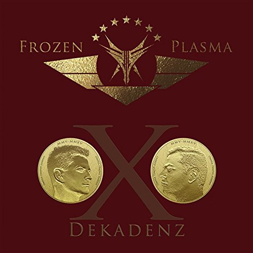
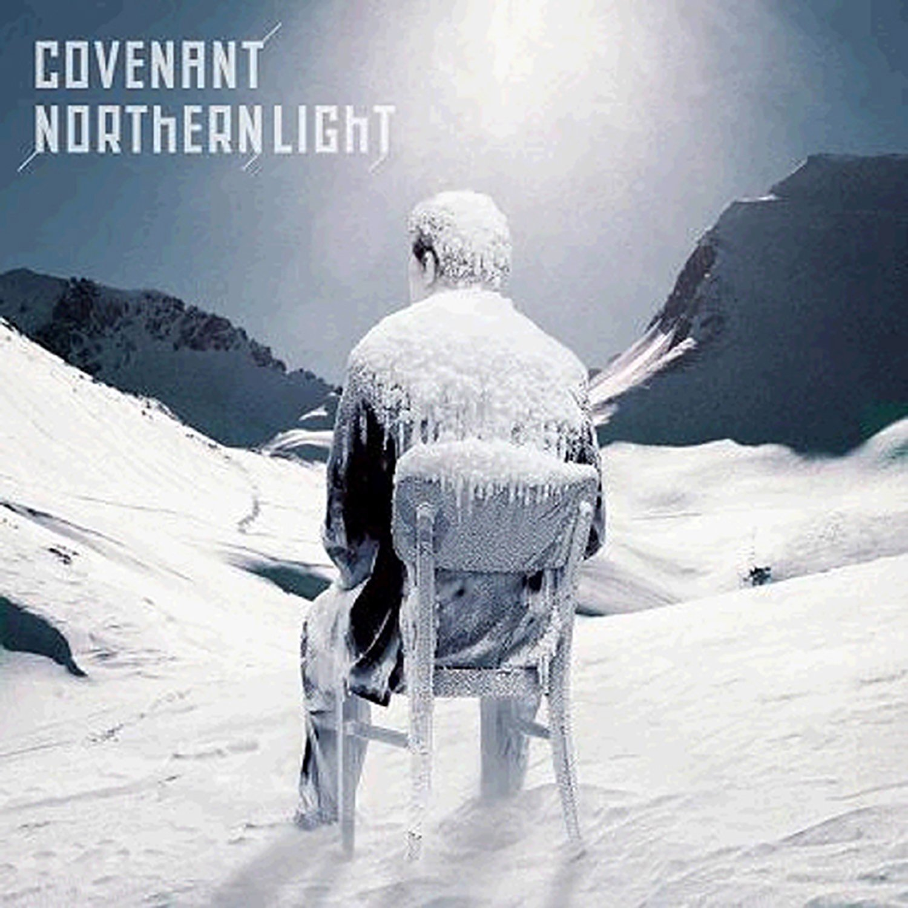

Take Some More - And One
Too much hunger in some days
How much longer must we wait
Promised wonders everyday
Take some more to feel OK
Lay the table - act of grace
You're not able - lost of face
From the cradle to the grave
Take some more to feel OK
Take some more - to feel OK
Take some more - carry the day
On your marks and keep ahead
With the aim to stay in the red
Friend are cut out - it's your game
Take some more to feel OK
Take some more - to feel OK
Take some more - carry the day
(Talk about destruction)
Depression comes in many flavors
Feelings of sadness
Frustration and unhappiness
Unnatural reactions to real life problems
But here're the statistics:
More and more teenagers
Suffered by psychic diseases
Caused by chemical and designer drugs
The suicide rate is increasing
The suicide rate is increasing

Standing - VNV Nation
Eyes betray the soul and bear its thinking
Beyond words, they say so many things to me
A stranger here, reborn it seems
Awaking wonders deep in me
If nothing's ventured, nothing's gained
So I must seize the day
And fighting time, so hard I pray
That this moment lasts forever
And will the world stay standing still, at least for me
Through my eyes, stare into me
I bear my heart for all to see
With my face turned to the sun, there ever standing still
It wasn't you, it wasn't me, it wasn't anything
It was a day so long awaited and a chance to be as me
I let the wind run through my hands
Before I turned to walk away
In distant days, I long to sense it, all so clear
And fighting time, so hard I pray
That this moment lasts forever
And will the world stay standing still, at least for me
Through my eyes stare into me
I bear my heart for all to see
With my face turned to the sun, there ever standing still
I had no faith before that time in any vow or deed
Days followed days and years were meaningless
Despite the wisdom of defeat
I bore my heart for all to see, the wonders I'd seen
The wonders I'd seen

Age After Age - Frozen Plasma
Hold fast to your dreams
soon they will die
life is a broken a broken-winged bird
who always will try but never will fly
who never will fly
and never get heard
hold fast to your dreams
for when dreams will go
life is a barren field frozen with snow
which never will feed any kind of hope
any kind of hope
no place to lie low
hold fast to your dreams
they wont come true
and if you think your life is under control
and you don't know how high to rise
how high to rise
until you fall
hold fast to your dreams
as strong as you can
reality fights against you every day
trying to break your hope apart
your hope apart
and leave you astray
life after life
and age after age
timorous soul
wide awake
life after life
and age after age
sun beaten path
which way to take
life after life
and age after age
when do we start to believe
life after life
and age after age
name fame or love
what to achieve

Invisible & Silent - Covenant
I'm tricked by your smile
Want to be forgiven
Waiting for the battle
Aching for belief
But your answer is wrong
And my spirit is broken
Like choirs in the winter
Singing out of key
I am silent
Invisible to you
While I count the days gone by
I am silent
Invisible to you
While I shape the things to come
I am silent
Invisible to you
While I count the days gone by
I try so hard
To fight for an illusion
Holding my breath
Biting my tongue
I try to cope
So give me a reason
I'm waiting for help
I'm trapped by my guilt
Want to be forgotten
Tired of the noise
Aching for relief
But your anger is gone
And my silence is golden
Like fires on the water
Drifting out of reach